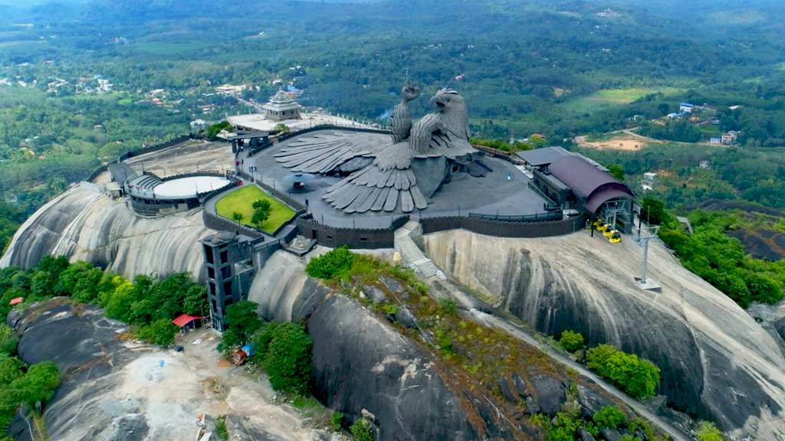

Jatayu’s Earth Centre: For Adventure:
The center of leisure activities for people with no age limit. A must-go-to place for luxurious boating, picnic, and the art museum among other tourist places in Kollam. The park encloses a place possessing numerous rides and impressive scenery that makes it ideal for a family picnic. With the alluring backwaters, travelers can enjoy houseboat cruises, deluxe boats, and speedboats in the midst of serene waters. Apart from the boat club, children’s park, this place covers enticements such as a 200-year-old government guest house and Yatri Nivas. Also, on the establishment is the art museum, where painting lovers seizes a chance to admire exhibit paintings collected from different parts of the country. And the fun doesn’t end here, a nature dweller can visit the mangroves close to the park to spot endangered species of bushes.
Ashtamudi Lake:

The incredible beauty of Kerala, Ashtamudi lake has eight branches that coincide with the Arabian sea after converging into one channel, hence the name Ashtamudi, where Ashta means eight and mudi means branch. Spell-binding the travelers with its inarticulate and persuasive charm, this second largest lake in Kerala is one of the most popular places to visit in Kollam. Beautifying the banks of this lake, palm and coconut trees, intensifies the fascinating experience of calm and lush green waterways. Thriving harmoniously in Kollam district of Kerala, Ashtamudi lake immerses the tourists with tremendous pleasure by granting them an experience of houseboat cruising.